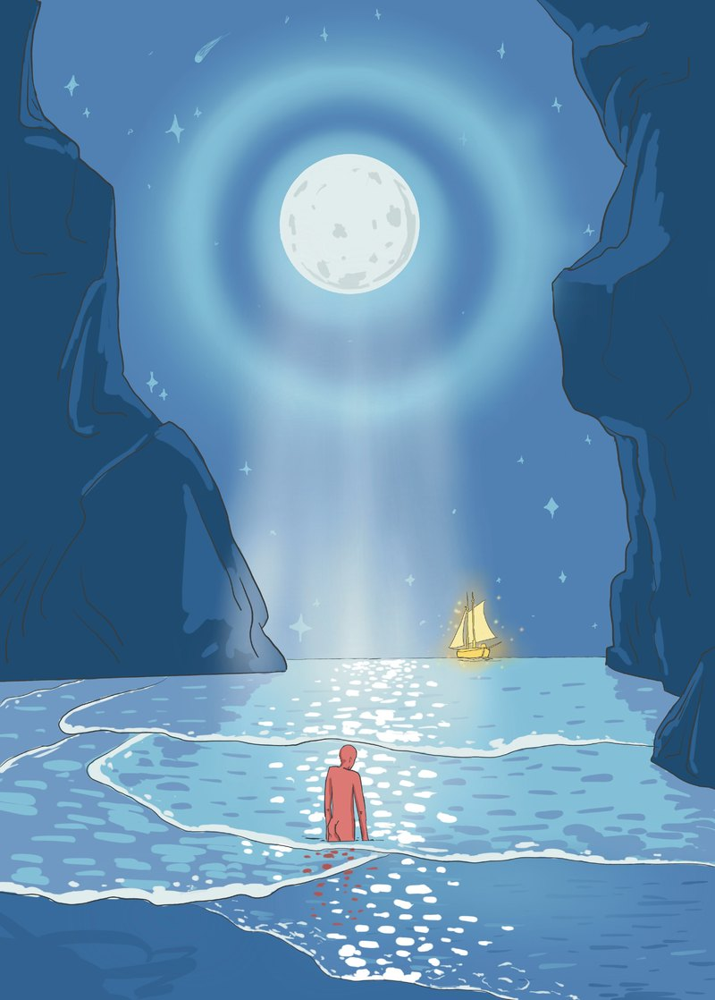
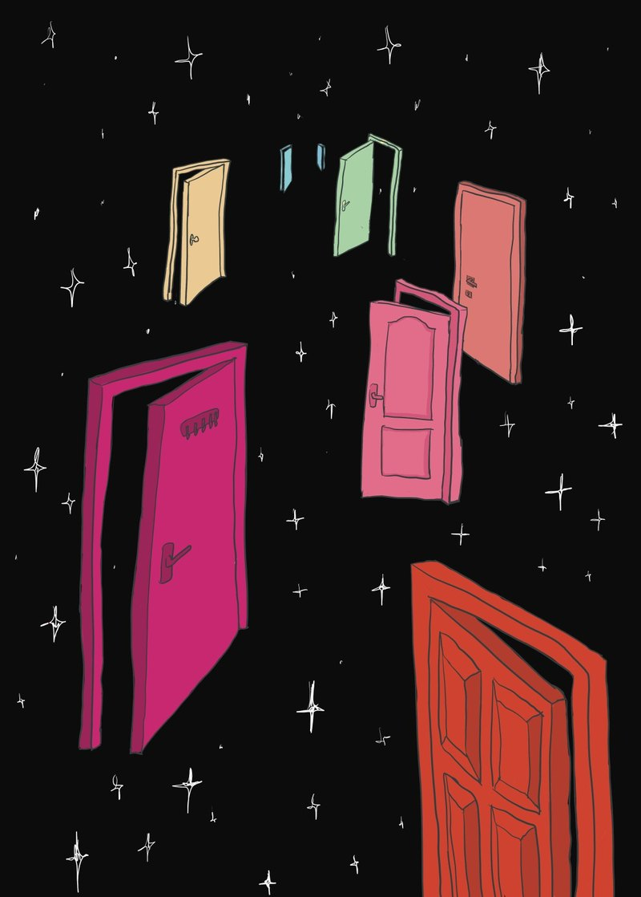
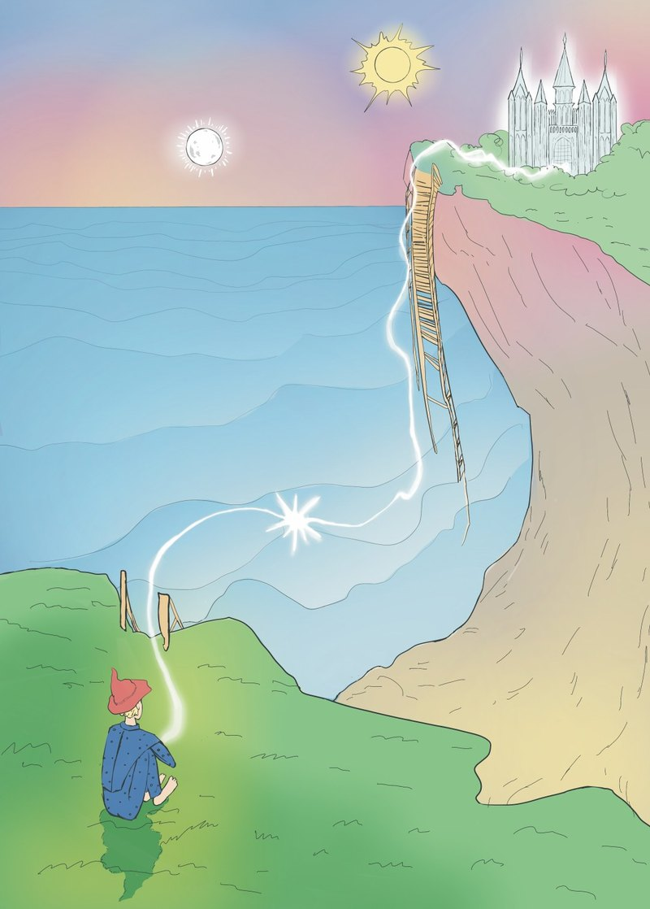

расклад на три карты
Что держит.
Что отпустить.
Куда идти.

Сделайте его вместе со мной
SHE
1/7
Сделайте его вместе со мной
что держитчто отпуститькуда идтиЗадайте себе вопрос
и листайте

Чего вы ждёте, стоя у воды?

Что вы до сих пор держите открытым по привычке?

Какой первый шаг наверх можно сделать на этой неделе?
Через месяц сделайте его снова
и посмотрите, что изменилось.

40 карт, которые я нарисовала сама. 18+